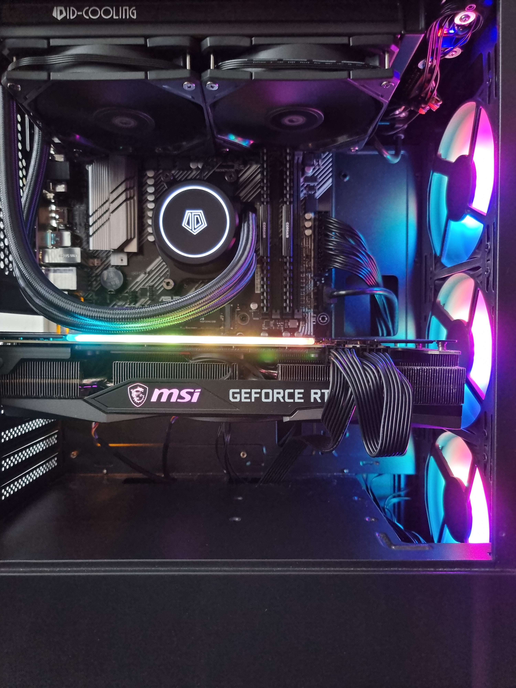

Why tech?
I reckon if you was to trace my every life decisision from typing this right now, to a single original thing, a big one would probably be games. Ive played videogames for as long as i can remember. Ive been wanting to get tnto tech since my freind tom (an IT technician) taught me how to build my PC, which to this day im still pretty proud of. Its uses an NVIDIA GeForce RTX 3070 MSI graphics card, an AMD Ryzen 5 5600x 6-core Processor, 32gb of ram with a 1tb of storage M.2s all water cooled.
Tech is everywhere and is in everypart of our lifes and my thinking being, if i can get a career at the age of 20 and in somthing that will never leave relavency, then i think that would be pretty awesome
Transferable skills
I havnt really thought about htis till now.
- Communication. If there's one thing I can do well its talk, I dont know if I'd describe myself as a people person but I'd definitly say I'm good with people I find myself able commune infomation with just about anyone.
- Problem Solving. I think problem solving is a daily skill thats required for any task and I've had to do it in every job I've had.
- Team Work. Say Ive coded somthing incorrectly, the likely hood of multiple people spotting the error is far more likely then just me, that being said it goes both ways if theres any way i can help a someone on my team then i will do so. "A smart person surrounds themself with smart people"
- Adaptability is something i think im good at. when your in a job you dont like you adapt and try to do somthing you want to do which is what i did.
- Compromise. I understand the importance of compromise and always strive to find a solution that works for everyone involved.
3 dream jobs
Admittedly I've come here unsure on an end goal other than a career in tech, which i understand is pretty vague.
- Test Engineer
- User Experience Designer
- QA Test Engineer